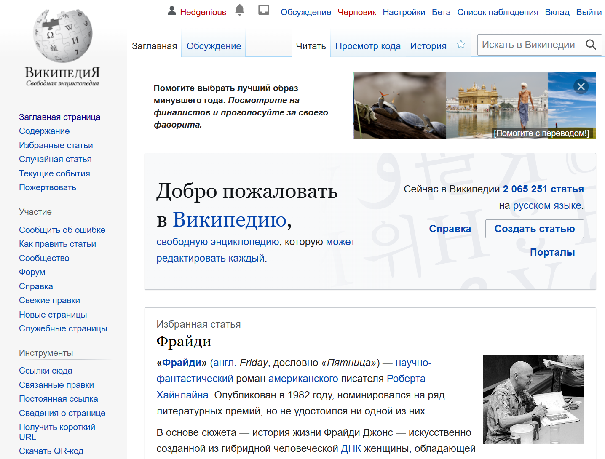

🎯 Цель этого руководства
Это руководство поможет вам создать аккаунт в Википедии безопасно и правильно. Мы рассмотрим каждый шаг подробно с примерами и советами.
📋 Что вам понадобится
- Компьютер или планшет с доступом в интернет
- Действующий email адрес (можно использовать родительский)
- 30-45 минут свободного времени
- Помощь взрослого (рекомендуется)
🔐 Шаг 1: Выбор никнейма
Перед регистрацией важно выбрать хороший никнейм. Прочитайте наше руководство по выбору никнейма.
Совет: Выберите никнейм заранее и проверьте, что он свободен в Википедии.
🌐 Шаг 2: Переход на сайт Википедии
- Откройте браузер (Chrome, Firefox, Safari или Edge)
- Перейдите на сайт ru.wikipedia.org
- Нажмите кнопку "Создать учётную запись" в правом верхнем углу

Главная страница Википедии - найдите кнопку "Создать учётную запись" в правом верхнем углу
📝 Шаг 3: Заполнение формы регистрации
Заполните все поля формы:
1. Имя пользователя

Введите выбранный никнейм и проверьте доступность
2. Пароль
Создайте надёжный пароль (минимум 8 символов)
3. Email адрес
Введите действующий email для восстановления
Подробные инструкции:
Имя пользователя
- Введите выбранный никнейм
- Проверьте, что он доступен (зелёная галочка)
- Если занят - выберите другой вариант
Пароль
- Используйте надёжный пароль (минимум 8 символов)
- Включите буквы, цифры и символы
- Запишите пароль в безопасном месте
Подтверждение пароля
Введите тот же пароль ещё раз для проверки.
Email адрес
- Введите действующий email
- На этот адрес придёт письмо для подтверждения
- Можно использовать родительский email
✅ Шаг 4: Подтверждение email
- Проверьте почту (включая папку "Спам")
- Найдите письмо от Википедии
- Нажмите на ссылку в письме
- Ваш аккаунт будет активирован
Пример письма подтверждения от Википедии
🎉 Шаг 5: Первый вход
- Вернитесь на ru.wikipedia.org
- Нажмите "Войти"
- Введите имя пользователя и пароль
- Нажмите "Войти"

Так выглядит главная страница Википедии после успешного входа в аккаунт
⚠️ Важные правила безопасности
Помните:
- Никогда не сообщайте пароль другим
- Выходите из системы на общих компьютерах
- Используйте только надёжные пароли
- Соблюдайте правила Википедии
🆘 Решение проблем
Не приходит письмо подтверждения
- Проверьте папку "Спам"
- Подождите 10-15 минут
- Проверьте правильность email адреса
Забыли пароль
- Нажмите "Забыли пароль?"
- Введите имя пользователя
- Следуйте инструкциям в письме
📚 Что дальше?
После успешной регистрации изучите: